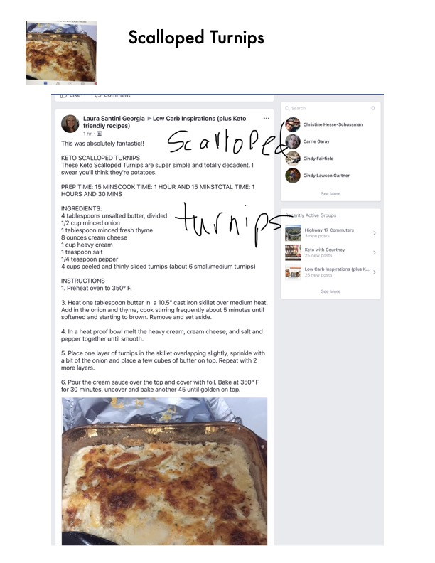

Keto Scalloped Turnips

Original cookbook page 1
These Keto Scalloped Turnips are super simple and totally decadent. I swear you'll think they're potatoes.
Prep: 15 minutes • Cook: 1 hour and 15 minutes • Total: 1 hour and 30 minutes
Ingredients
- 4 tablespoons unsalted butter, divided
- 1/2 cup minced onion
- 1 tablespoon minced fresh thyme
- 8 ounces cream cheese
- 1 cup heavy cream
- 1 teaspoon salt
- 1/4 teaspoon pepper
- 4 cups peeled and thinly sliced turnips (about 6 small/medium turnips)
Instructions
- Preheat oven to 350° F.
- Heat one tablespoon butter in a 10.5" cast iron skillet over medium heat. Add in the onion and thyme, cook stirring frequently about 5 minutes until softened and starting to brown. Remove and set aside.
- In a heat proof bowl melt the heavy cream, cream cheese, and salt and pepper together until smooth.
- Place one layer of turnips in the skillet overlapping slightly, sprinkle with a bit of the onion and place a few cubes of butter on top. Repeat with 2 more layers.
- Pour the cream sauce over the top and cover with foil. Bake at 350° F for 30 minutes, uncover and bake another 45 until golden on top.
Recipe #1 from collection